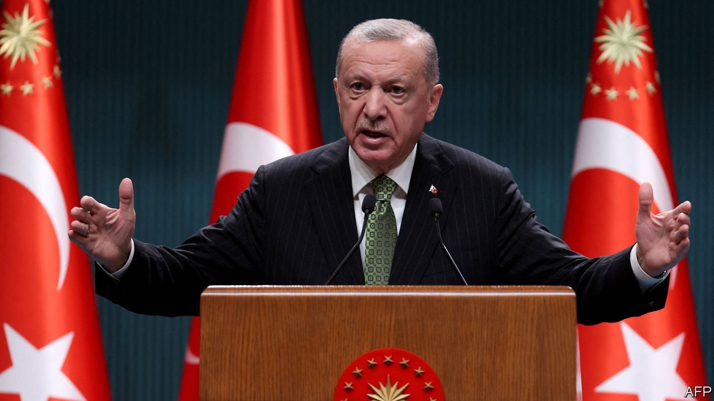
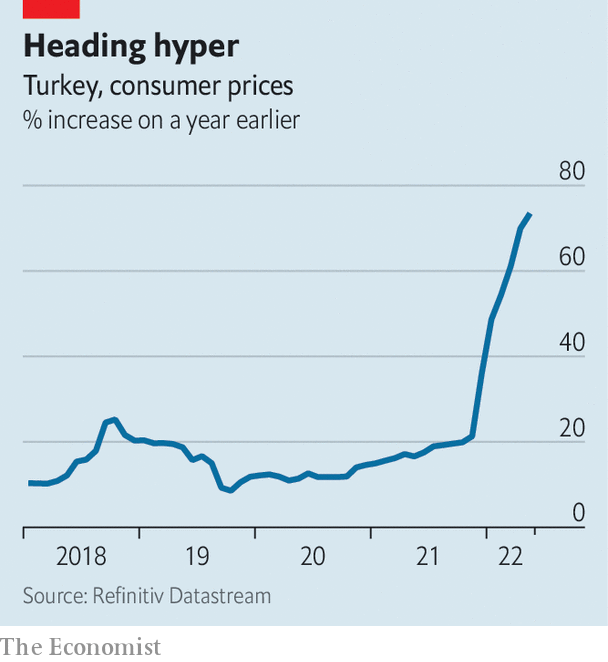

As elections approach, Turkey’s president finds enemies everywhere
Recep Tayyip Erdogan wants to distract public attention from soaring inflation

A court sentenced Canan Kaftancioglu to nearly five years behind bars and banned her from politics. Her crime was to have posted messages deemed insulting to Turkey’s president, Recep Tayyip Erdogan, on social media several years ago. She was transferred to prison on May 31st but immediately released on probation. Her case, she says, shows what Turkey’s opposition can expect over the coming months. She is a politician from the main opposition Republican People’s Party (chp). The court system is beholden to Mr Erdogan, she says. “The courts decide on the basis of what passes through the lips of the man in the palace.”
The presidential and parliamentary elections Mr Erdogan faces next year look set to be the toughest of his long career. The official inflation rate has now topped a staggering 73%. The true figure may be in triple digits. Opinion polls suggest that most Turks have no faith in the country’s statistics agency. And even more pain may be in store. Turkey’s currency, which recovered at the start of the year thanks to the introduction of a deposit-insurance scheme and sales of dollar reserves by the central bank, is now bracing for another crash landing, following Mr Erdogan’s promise of new interest-rate cuts.
The Turkish leader’s election strategy is starting to come into focus. With the economy beyond repair, at least with the current monetary-policy settings in place, Mr Erdogan has decided instead to search for monsters to destroy, abroad and at home. Dressed up as a war on terror, a new wave of repression is gathering steam.
Leaders of the country’s biggest Kurdish party, the Peoples’ Democratic Party (hdp), including Selahattin Demirtas, a former presidential contender, have already spent years in prison on trumped-up terrorism charges. Turkey’s constitutional court may soon close down the hdp as a whole, citing links to the pkk, a banned terrorist organisation. The courts are also starting to go after chp heavyweights. Mrs Kaftancioglu will not be the last. Ekrem Imamoglu, the mayor of Istanbul and one of the opposition politicians best placed to unseat Mr Erdogan at the next election, according to polls, may well be next. Prosecutors have accused Mr Imamoglu of the heinous crime of insulting the officials who overturned his victory in the 2019 mayoral vote and ordered a repeat, which he then also won, by calling them “fools”. A verdict in his case is expected in September. If found guilty, he faces up to four years in prison and a ban from politics.
Mr Erdogan has also made clear that he will not tolerate any popular unrest. On June 1st, the anniversary of the mass demonstrations that erupted across the country in 2013, he called the protesters “terrorists” and for good measure, “sluts”. Weeks earlier, a Turkish court had convicted seven activists who took part in the same protests of plotting to overthrow the government and sentenced them to 18 years in prison. Osman Kavala, the philanthropist whom prosecutors made out to be the group’s ringleader, was sentenced to life behind bars.

Mr Erdogan has also been banging war drums, warning of a new offensive against Kurdish troops, whom Turkey considers terrorists, in Syria. A successful invasion would link up areas Turkey captured in three previous offensives, giving its troops, flanked by thousands of Syrian Arab mercenaries, control over a 650km long strip of northern Syria. The decision may hinge on approval from Russia, which backs the Kurds and has some troops in the area. Vladimir Putin may be too bogged down in Ukraine to oppose the incursion. He might also be tempted to offer Mr Erdogan a green light in Syria as a token of appreciation for his pledge to block Sweden’s and Finland’s accession to nato.
Officially, Turkey’s president is upset with Sweden and Finland for refusing to extradite a handful of Kurdish militants, a septuagenarian human-rights activist, and followers of the Gulen movement, a sect Turkey blames for a violent coup attempt in 2016. Mr Erdogan says this amounts to supporting terrorism. His true motives are inscrutable. But Turkey’s leader is already using the crisis to score points at home by whipping up anger against Europe. The Nordics are only the latest and most unlikely front in Mr Erdogan’s war on terror. He will probably open new ones as elections approach. ■